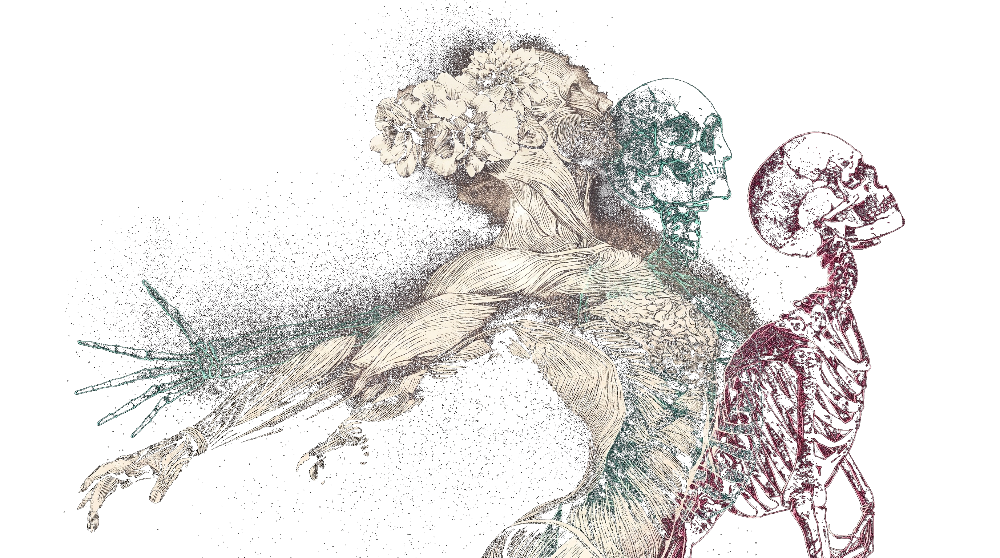
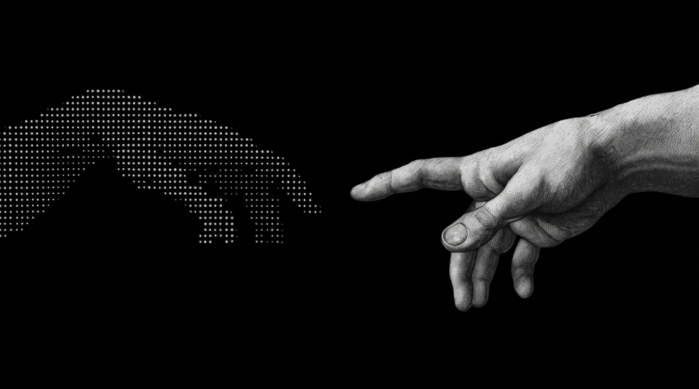
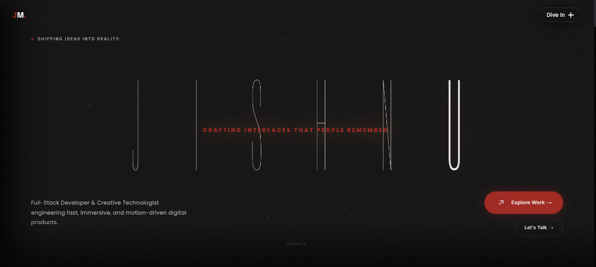
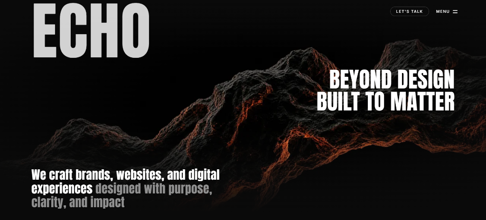
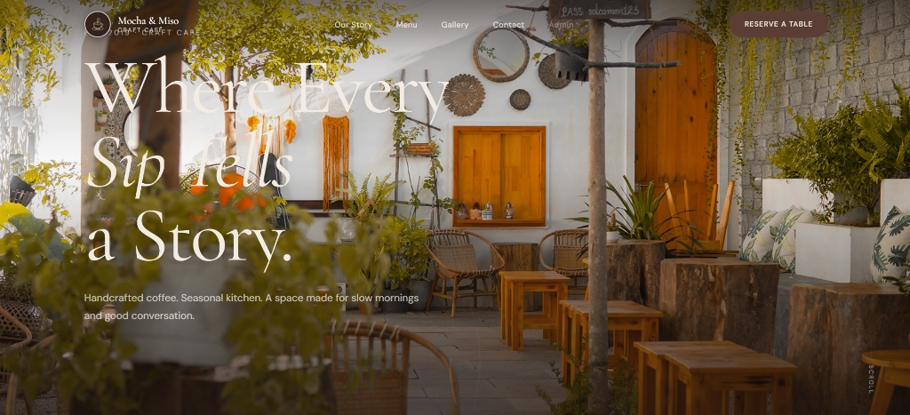

I'm a web developer specializing in modern, high-performance websites and digital experiences for startups, brands, and businesses. I focus on combining clean design, smooth interactions, and solid development to turn ideas into impactful digital products.
Beyond client work, I enjoy exploring emerging technologies, experimenting with new tools, and building projects that push my creativity and skills. I'm always open to exciting collaborations, new challenges, and opportunities to build something meaningful.
A FEW SONGS I CAN RECOMMEND IF YOU'RE LOOKING FOR SOME FRESH TUNES :)
FROM HIGH-CONVERSION LANDING PAGES TO AI-POWERED DASHBOARDS — EVERY BUILD HERE SOLVES A REAL-WORLD PROBLEM WITH STYLE AND SPEED.
A personal portfolio crafted to showcase skills, projects, and creative work — built for speed, smooth animations, and a bold first impression.

A bold design studio website built to showcase creative services, brand identity, and digital experiences — crafted with precision and visual impact.

A full-stack cafe management system with an admin portal for orders, menu, and reservations — built for seamless day-to-day cafe operations.

HAVE AN IDEA OR A PROJECT IN MIND? REACH OUT AND LET'S BUILD SOMETHING GREAT TOGETHER.
If you have any questions regarding our Services or need help, please fill out the form here. We do our best to respond within 1 business day.
rickmondal598@gmail.com
Phone
+91 8001381048
Address
Kolkata, West Bengal